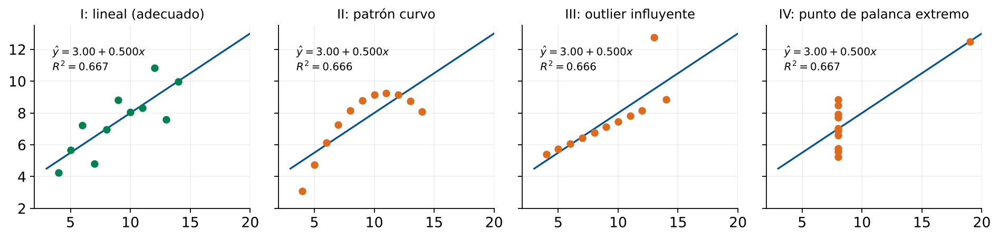

Interpretación de Coeficientes
Bondad del Modelo (R²) y Análisis de Residuos
Módulo 5 — Regresión y Análisis de Datos
Matemáticas 2 — Clase 22
Cátedra de Matemáticas 2
Ingeniería en Logística
Clase 22
Contenidos de la Clase
- Objetivos de Aprendizaje
- Repaso Rápido: Clase 21
- La Pendiente \(\hat\beta_1\): Efecto Marginal
- El Intercepto \(\hat\beta_0\): Costo Fijo
- Comparar Coeficientes entre Modelos
- Descomposición de la Variabilidad
- Interpretación Práctica de \(R^2\)
- Error Estándar del Modelo (\(s_e\))
- Cuando \(R^2\) Nos Engaña: Cuarteto de Anscombe
- El Gráfico de Residuos: Herramienta Diagnóstica
- Diagnóstico: Qué Hacer ante Cada Patrón
- MATLAB: Análisis Completo de Residuos
- Tres Variables, Tres Modelos: ¿Cuál Priorizar?
- MATLAB: Comparar Tres Modelos
- Caso: Empresa de Courier — Priorizar Acciones
- Resumen: Cómo Leer un Modelo de Regresión
- Punto de Decisión
- Tarea para la Clase 23
- Referencias
Objetivos de Aprendizaje
Al finalizar esta clase el estudiante será capaz de:
- Interpretar la pendiente y el intercepto de una recta de regresión en contexto logístico concreto.
- Distinguir entre significado estadístico y significado práctico de los coeficientes.
- Calcular e interpretar \(R^2\), \(R^2\) ajustado y el error estándar del modelo.
- Analizar gráficos de residuos para detectar problemas del modelo.
- Decidir qué variable priorizar en base a los coeficientes e indicadores de bondad del ajuste.
Conexión con Clase 21
Clase 21: construir el modelo \(\hat{y}=\hat\beta_0+\hat\beta_1 x\) con polyfit.
Clase 22: entender qué nos dice ese modelo y si podemos confiar en él.
Repaso Rápido: Clase 21
Modelo de regresión lineal simple
\[ \hat{y} = \hat\beta_0 + \hat\beta_1\,x \]
- \(\hat\beta_1\): pendiente (cambio en \(y\) por unidad de \(x\))
- \(\hat\beta_0\): intercepto (valor de \(y\) cuando \(x=0\))
- Ajustado minimizando \(\text{SCR}=\sum e_i^2\)
Dataset: distancia vs costo de envío
\[ \hat{y} = 143.1 + 2.273\,x \]
\(R^2 = 0.9992\)
Hoy profundizamos en:
- ¿Qué exactamente significa \(\hat\beta_1=2.273\)?
- ¿El intercepto tiene sentido físico?
- ¿Cómo leer el \(R^2\)?
- ¿Cuándo el \(R^2\) nos engaña?
- ¿Cómo detectar problemas con los residuos?
- ¿Qué variable "actuar" primero?
La Pendiente \(\hat\beta_1\): Efecto Marginal
Definición operativa
\(\hat\beta_1\) es el cambio esperado en \(y\) por cada unidad adicional de \(x\), manteniendo constante todo lo demás.
Ejemplo 1 — Costo vs distancia
\[ \hat y = 143.1 + \underbrace{2.273}_{\hat\beta_1}\,x \]
- Cada km adicional agrega en promedio $2.27 al costo total.
- Si una ruta se alarga 50 km, se espera un aumento de \(50\times2.273 \approx \$114\).
- Esta es la tasa marginal de costo por distancia.
Ejemplo 2 — Tiempo vs paradas
\(\hat y = 1.5 + 0.8\,x\)
- Cada parada adicional agrega 0.8 horas (48 min) al tiempo total.
- Para optimizar el tiempo: reducir el número de paradas.
Uso en decisión
La pendiente indica dónde actuar: si \(\hat\beta_1\) es alto, pequeñas reducciones en \(x\) generan grandes ahorros en \(y\).
El Intercepto \(\hat\beta_0\): Costo Fijo
Definición
Valor de \(\hat y\) cuando \(x = 0\).
\[ \hat y(0) = \hat\beta_0 \]
En logística
El intercepto captura todos los
costos fijos que no dependen de \(x\):
- Carga y descarga
- Peajes fijos
- Documentación
- Salario del conductor (parte fija)
- Amortización del vehículo
Cuidado con el intercepto
El intercepto puede no tener interpretación física directa si:
- \(x=0\) no existe en la práctica (distancia 0 = no hay envío)
- El rango de datos no incluye valores cercanos a 0
- El intercepto resulta negativo
En esos casos, es un
parámetro de ajuste, no un costo real medible.
Nuestro ejemplo
\(\hat\beta_0 = \$143.1\): costo fijo de cada envío, independiente de la distancia.
Con datos de 50 a 550 km, este valor es razonablemente interpretable.
Comparar Coeficientes entre Modelos
Una empresa analiza el costo de envío de 12 envíos (datos del script de la diapositiva 16) en función de tres variables por separado:
| Variable \(x\) | Unidad | \(\hat\beta_0\) | \(\hat\beta_1\) | \(R^2\) |
|---|
| Distancia | km | 133.9 | 2.29 | 0.997 |
| Peso de carga | toneladas | 89.3 | 161.8 | 0.991 |
| Núm. de paradas | cantidad | −26.3 | 126.3 | 0.975 |
Lectura de las pendientes
- +1 km de distancia → +$2.29 en costo
- +1 tonelada de peso → +$161.8 en costo
- +1 parada adicional → +$126.3 en costo
Las pendientes no son directamente comparables
\(\hat\beta_1 = 126.3\) (paradas) vs \(\hat\beta_1 = 2.29\) (km) no significa que las paradas sean 55 veces más "importantes". Las unidades son distintas.
Para comparar impactos, se deben estandarizar las variables o analizar el efecto de una desviación estándar.
Decisión práctica
Reducir 1 parada ahorra $126. Reducir 55 km ahorra \(55\times2.29\approx\$126\).
El efecto de ambas acciones es similar en magnitud monetaria.
Descomposición de la Variabilidad
\[ \underbrace{\sum(y_i-\bar y)^2}_{\text{SCT (total)}} = \underbrace{\sum(\hat y_i-\bar y)^2}_{\text{SCM (modelo)}} + \underbrace{\sum(y_i-\hat y_i)^2}_{\text{SCR (residual)}} \]
SCT = variabilidad total de y (ejemplo ilustrativo con \(R^2=0.70\))
\[ R^2 = \frac{\text{SCM}}{\text{SCT}} = 1 - \frac{\text{SCR}}{\text{SCT}} \]
Proporción de la variabilidad explicada por el modelo.
\(R^2 \in [0,1]\). Cuanto más cerca de 1, mejor el ajuste.
Interpretación Práctica de \(R^2\)
| Valor de \(R^2\) | Interpretación | Uso en logística |
|---|
| \(\geq 0.95\) | Ajuste excelente | Presupuestación financiera, contratos |
| 0.90 – 0.95 | Muy bueno | Planificación táctica, cotizaciones |
| 0.80 – 0.90 | Bueno | Estimaciones operativas, tendencias |
| 0.60 – 0.80 | Moderado | Análisis exploratorio, hipótesis |
| \(< 0.60\) | Débil | No apto para decisión; revisar modelo |
Nuestro ejemplo
\(R^2 = 0.9992\)
El modelo explica el 99.9% de la variación en costos de envío.
\(\Rightarrow\) Apto para presupuestación.
Trampa común
Un \(R^2\) alto no garantiza que el modelo sea bueno.
Puede haber sobreajuste, outliers influyentes o relaciones no lineales enmascaradas.
Siempre revisar los residuos.
Error Estándar del Modelo (\(s_e\))
Definición
\[ s_e = \sqrt{\frac{\text{SCR}}{n-2}} = \sqrt{\frac{\sum e_i^2}{n-2}} \]
Estimación de la desviación típica de los errores \(\varepsilon_i\).
Se mide en las mismas unidades que \(y\).
Interpretación: el modelo se equivoca en promedio \(\pm s_e\) unidades de \(y\).
Para nuestro ejemplo:
\[ s_e = \sqrt{\frac{1154.1}{10-2}} = \sqrt{144.3} \approx \$12.0 \]
El modelo predice el costo con un error típico de \(\pm\)$12.0 por envío.
Intervalo de predicción aprox.
Para un envío de distancia \(x^*\):
\[ \hat y(x^*) \pm 2\,s_e \quad (\approx 95\%) \]
Decisión con \(s_e\)
Presupuesto para \(x=300\) km:
\(\hat y = 143.1+2.273(300) \approx \$825\) con margen \(\pm 2s_e\approx\pm\)$24.
Rango: [$801, $849].
Cuando \(R^2\) Nos Engaña: Cuarteto de Anscombe

Mismas medias, misma recta \(\hat y\approx 3.00+0.500x\) y mismo \(R^2\approx0.67\), pero patrones muy distintos
La lección del cuarteto de Anscombe (1973)
Cuatro datasets distintos tienen exactamente el mismo \(\bar x\), \(\bar y\), \(\hat\beta_0\), \(\hat\beta_1\) y \(R^2 \approx 0.67\).
Sin embargo, solo el primero tiene una relación lineal adecuada.
Los otros tres tienen: patrón curvo, outlier influyente y palanca extrema.
Conclusión: SIEMPRE graficar los datos y los residuos.
El Gráfico de Residuos: Herramienta Diagnóstica
El gráfico de residuos \(e_i\) vs \(\hat y_i\) (o vs \(x_i\)) revela si el modelo lineal es adecuado.
Diagnóstico: Qué Hacer ante Cada Patrón
| Patrón en residuos | Diagnóstico | Acción recomendada |
|---|
| Sin patrón, aleatorio | Modelo adecuado | Usar el modelo con confianza |
| Curva (U o arco) | Relación no lineal | Agregar término cuadrático (\(x^2\)), Clase 25 |
| Embudo (varianza crece) | Heteroscedasticidad | Transformar \(y\) (log, raíz) o usar WLS |
| Punto muy alejado | Outlier | Investigar: error de datos o caso atípico real |
| Tendencia ascendente | Variable omitida | Agregar más predictores, Clase 23 |
Regla de oro
Un buen modelo lineal tiene residuos que parecen ruido blanco: aleatorios, centrados en cero, sin patrón, de varianza aproximadamente constante.
MATLAB: Análisis Completo de Residuos
% Datos y modelo (de Clase 21)
x = [50 80 120 180 250 300 350 420 480 550]';
y = [260 310 420 560 710 820 960 1080 1240 1390]';
p = polyfit(x, y, 1);
y_hat = polyval(p, x);
e = y - y_hat;
n = length(x);
% Error estandar
se = sqrt(sum(e.^2) / (n-2));
fprintf('Error estandar se = $%.4f\n', se)
% Residuos estandarizados (para detectar outliers)
e_std = e / se;
fprintf('Residuos estandarizados:\n')
for i = 1:n
alerta = '';
if abs(e_std(i)) > 2, alerta = ' <-- POSIBLE OUTLIER'; end
fprintf(' e%d_std = %6.3f%s\n', i, e_std(i), alerta)
end
% Grafico diagnostico completo
figure('Position',[50 50 950 420]);
subplot(1,2,1)
scatter(y_hat, e, 60, [0 0.45 0.74], 'filled')
yline(0,'k--','LineWidth',1.5)
yline(2*se,'r--','LineWidth',1); yline(-2*se,'r--','LineWidth',1)
xlabel('Valores ajustados'); ylabel('Residuos ($)')
title('Residuos vs Ajustados'); grid on
subplot(1,2,2)
qqplot(e) % grafico Q-Q para normalidad
title('Q-Q plot de residuos (normalidad)')
Tres Variables, Tres Modelos: ¿Cuál Priorizar?
Se ajustan tres modelos separados para el costo de distribución (12 envíos, script de la diapositiva siguiente):
| Modelo | Variable \(x\) | \(\hat\beta_0\) | \(\hat\beta_1\) | \(R^2\) | \(s_e\)($) | Acción unitaria |
|---|
| M1 | Distancia (km) | 133.9 | 2.29 | 0.997 | 20.3 | Reducir ruta |
| M2 | Peso carga (ton) | 89.3 | 161.8 | 0.991 | 37.0 | Optimizar carga |
| M3 | Paradas (#) | −26.3 | 126.3 | 0.975 | 59.6 | Consolidar paradas |
Análisis de impacto por acción factible
- Reducir 20 km la ruta: ahorro \(20\times2.29 = \$45.8\)
- Reducir 0.5 ton de carga: ahorro \(0.5\times161.8 = \$80.9\)
- Eliminar 1 parada: ahorro \(1\times126.3 = \$126.3\)
Decisión: ¿qué variable priorizar?
La pendiente más alta ($126.3/parada) indica que eliminar una parada tiene el mayor impacto unitario. Pero hay que evaluar: ¿es factible eliminar paradas sin perder clientes?
La decisión combina matemática y operación.
MATLAB: Comparar Tres Modelos
% Datos de 12 envios (distancia, peso, paradas, costo)
dist = [50 80 120 180 250 300 350 420 480 550 200 320]';
peso = [1 1.5 2 3 4 5 5.5 6 7 8 2.5 4.5]';
paradas = [2 3 4 5 6 7 8 9 10 11 4 6 ]';
costo = [260 310 420 560 710 820 960 1080 1240 1390 540 870]';
vars = {dist, peso, paradas};
etiq = {'Distancia (km)', 'Peso (ton)', 'Paradas (#)'};
modelos = cell(3,1);
fprintf('%-18s %-8s %-8s %-8s %-8s\n',...
'Variable','b0','b1','R2','se($)');
fprintf('%s\n', repmat('-',52,1))
for k = 1:3
p_k = polyfit(vars{k}, costo, 1);
y_k = polyval(p_k, vars{k});
e_k = costo - y_k;
R2_k = 1 - sum(e_k.^2)/sum((costo-mean(costo)).^2);
se_k = sqrt(sum(e_k.^2)/(length(costo)-2));
modelos{k} = p_k;
fprintf('%-18s %-8.1f %-8.2f %-8.4f %-8.2f\n',...
etiq{k}, p_k(2), p_k(1), R2_k, se_k)
end
Salida esperada
Distancia (km) 133.9 2.29 0.9971 20.31
Peso (ton) 89.3 161.77 0.9905 36.98
Paradas (#) -26.3 126.35 0.9754 59.60
Interpretación del output
El modelo con mayor \(R^2\) y menor \(s_e\) describe mejor la variación del costo.
Pero el modelo con la pendiente más alta revela qué variable mover para mayor impacto.
Caso: Empresa de Courier — Priorizar Acciones
Situación
una empresa de courier tiene costos elevados. El gerente tiene presupuesto para mejorar una sola cosa.
Opciones
- Optimizar rutas: reducir distancia promedio 30 km
- Mejor empaque: reducir peso promedio 0.8 ton
- Consolidar pedidos: eliminar 2 paradas promedio
Modelos disponibles (ajustados)
- M1: \(\hat y = 133.9 + 2.29\,x_{\text{dist}}\), \(R^2=0.997\)
- M2: \(\hat y = 89.3 + 161.8\,x_{\text{peso}}\), \(R^2=0.991\)
- M3: \(\hat y = -26.3 + 126.3\,x_{\text{par}}\), \(R^2=0.975\)
Cálculo de ahorro esperado
- Opción 1: \(30\times2.29 = \$68.7\) por envío
- Opción 2: \(0.8\times161.8 = \$129.4\) por envío
- Opción 3: \(2\times126.3 = \$252.7\) por envío
Recomendación matemática
Opción 3 (consolidar paradas): mayor ahorro por envío ($252.7).
Con 500 envíos/mes: ahorro potencial ≈ $126.350/mes.
Consideración operativa
M3 tiene el menor \(R^2\) (0.975) y el mayor \(s_e\) ($59.6): menor confianza.
Validar con más datos antes de comprometerse.
Resumen: Cómo Leer un Modelo de Regresión
Checklist de interpretación:
- Graficar primero: dispersión de datos. ¿Se ve lineal?
- Leer \(\hat\beta_1\): efecto marginal. Por cada unidad de \(x\), \(y\) cambia en \(\hat\beta_1\) unidades.
- Leer \(\hat\beta_0\): valor base. ¿Tiene sentido para \(x=0\)?
- Evaluar \(R^2\): ¿qué porcentaje de la variabilidad explica el modelo?
- Calcular \(s_e\): error típico de predicción en unidades reales.
- Revisar residuos: gráfico diagnóstico. ¿Hay patrones?
- Comparar modelos: si hay varias variables, ¿cuál tiene mayor \(R^2\) y menor \(s_e\)?
- Tomar decisión: ¿qué variable actuar primero según las pendientes?
Punto de Decisión
Pregunta de Cierre
Tienes tres modelos de regresión para el costo de distribución. El modelo de "paradas" tiene \(\hat\beta_1=126.3\) (mayor ahorro unitario) pero \(R^2=0.975\) (peor ajuste). El modelo de "distancia" tiene \(\hat\beta_1=2.29\) pero \(R^2=0.997\).
¿Qué variable priorizarías para reducir costos? ¿El \(R^2\) más alto siempre indica la variable más importante?
El \(R^2\) mide ajuste
\(R^2\) alto = el modelo describe bien la variación histórica. No mide impacto.
La pendiente mide palanca
\(\hat\beta_1\) alto = cada unidad de acción genera más cambio en costo.
La decisión integra ambos
Alta pendiente + alto \(R^2\) = variable ideal. Si no coinciden, evaluar factibilidad operativa.
Tarea para la Clase 23
Lecturas
- Montgomery, Cap. 3: Regresión lineal múltiple — formulación y estimación
- Montgomery, Cap. 2.4: Análisis de residuos (complementar hoy)
Ejercicio preparatorio
Con el dataset de la Clase 21 (distancia vs costo) más los datos de peso y paradas del script de hoy:
- Ajustar los tres modelos M1, M2, M3 con
polyfit.
- Para cada modelo: calcular \(R^2\), \(s_e\) y graficar residuos.
- Construir la tabla comparativa y concluir qué variable priorizar.
- Calcular el ahorro mensual esperado de cada opción asumiendo 300 envíos/mes y las mejoras del caso de courier.
Próxima clase 23
Regresión Lineal Múltiple — modelar costos con múltiples factores simultáneamente
Referencias
- Montgomery, D.C., Peck, E.A. & Vining, G.G. (2012). Introduction to Linear Regression Analysis (5th ed.). Wiley. Cap. 2 (Regresión simple e interpretación), Cap. 3.2 (Diagnóstico).
- Anscombe, F.J. (1973). Graphs in Statistical Analysis. The American Statistician, 27(1), 17–21. (Artículo original del cuarteto de Anscombe.)
- Lay, D.C. (2016). Álgebra Lineal (5a ed.). Pearson. Cap. 6.5 (Mínimos cuadrados y proyección ortogonal).
- MATLAB Documentation.
polyfit, qqplot, fitlm. https://www.mathworks.com/help/matlab/
- Material propio: Dataset courier, Script
clase22_interpretacion.m.
Matemáticas 2 — Clase 22 | Interpretación y \(R^2\)
¡Hasta la próxima clase!
Clase 23: Regresión Lineal Múltiple
contacto@mat2logistica.edu